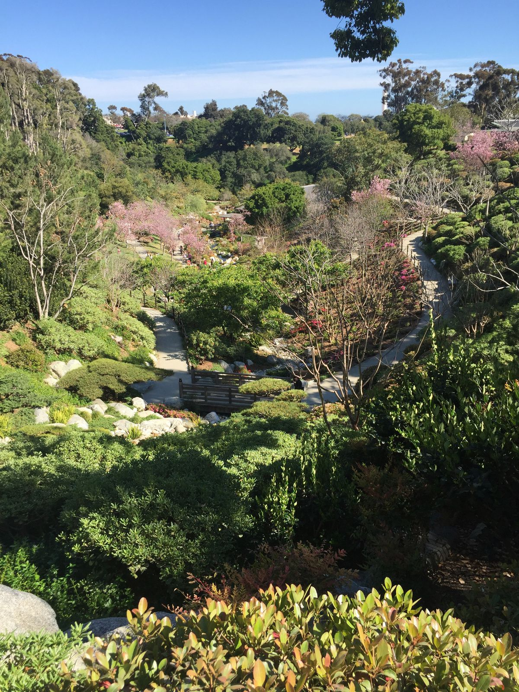
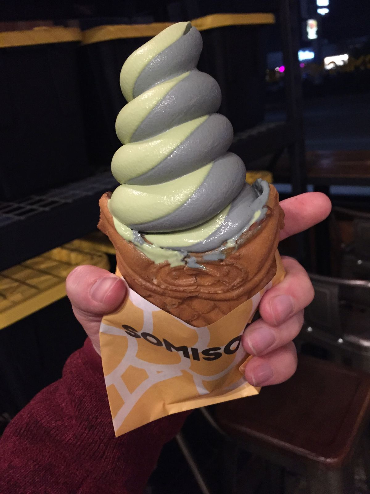
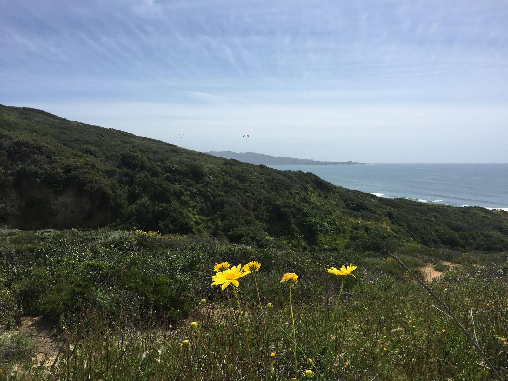
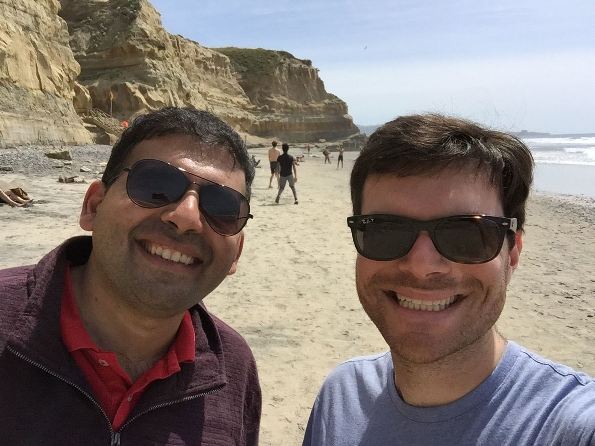

Wandering San Diego
After the zoo, I decided to spend some time exploring Balboa Park, hoping to find a quiet shady place to read for a bit before dinner. On the map was the Japanese Friendship Garden, so I found a parking spot nearby.
As an aside, parking is extraordinarily easy in San Diego. There are parking lots everywhere and red paint on curbs tells you clearly where you cannot park. Almost all parking is free.
My first California experience at a Japanese garden, you may recall, was a few weeks ago when I was in San Francisco at Golden Gate Park. I was surprised to find that they charged a $9 admission to enter the garden. This San Diego garden, I now thought, must be free, especially if it's called a "Friendship Garden". If you have to pay for it, so the line-of-thought goes, then it's not friendship.
Unfortunately, the garden charged a $12 entry fee, so I decided to find another park. Continuing my stroll around Balboa Park, I found a few other gardens and places to sit.

After a while, I began to crave ice cream, as I often do, so I searched for ice cream places with more than 4 stars on Yelp. I found Hammond's Gourmet Ice Cream and drove over to North Park, where, once again, parking was a breeze. This was to be my second of four ice creams in the course of about 48 hours.

Matcha and black sesame swirl soft serve ice cream in a Nutella-filled fish-shaped soft waffle cone at Somisomi 
Stracciatella and strawberry gelato at Bobboi Natural Gelato at La Jolla Cove
Today, I went to Torrey Pines State Reserve with my friend and walked to the peak and then down to the beach bluffs. Along the way, we spotted a rattlesnake in the bushes who was doing its best to ignore us. OK, I'm pretty tired right now and am going to stop for the night. Enjoy some pictures of Torrey Pines.

